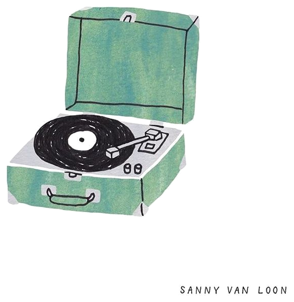
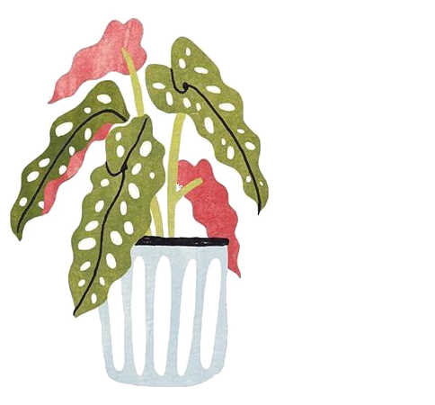
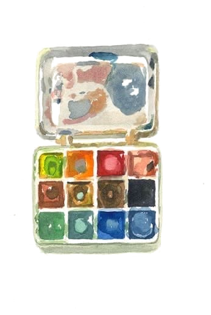
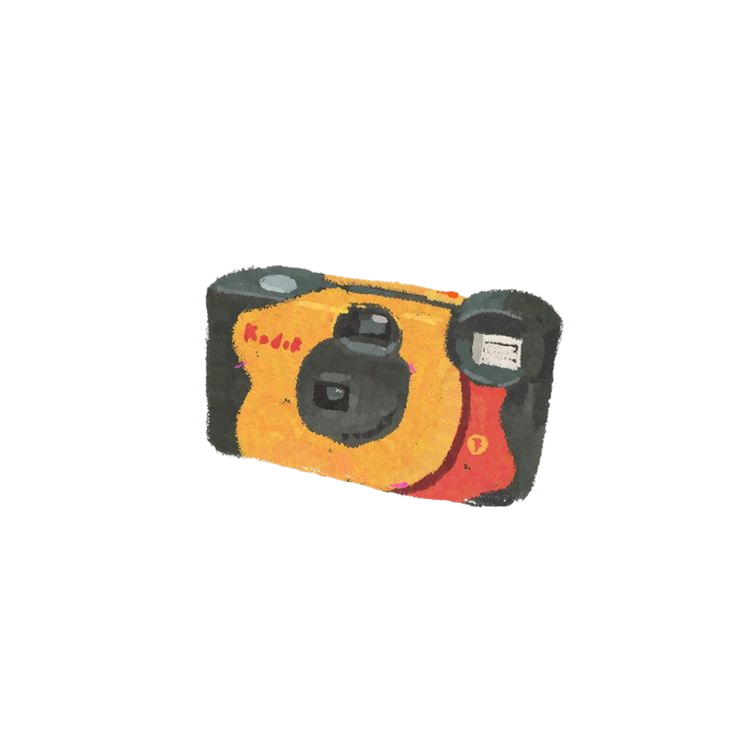

holaaaaaa...
i’m Claudia—
I’m Claudia, and I wholeheartedly embrace the beauty of complexity. Just like you, I refuse to be limited by a single definition. Instead, I thrive in the realm of possibilities. Within the tapestry of my being, I resonate with multiple roles that fuel my diverse and ever-evolving identity. As a believer, I find solace in faith and the wonders of the universe.
As an artist, I express my innermost thoughts and emotions through various mediums, inviting others to join me on a journey of self-discovery. As a creator, I revel in the process of bringing ideas to life, shaping tangible manifestations of my imagination. And as a UI designer, I combine aesthetics and functionality to craft seamless and user-friendly experiences in the digital realm.
Together, these facets weave a vibrant mosaic that is uniquely me.




Take a peek at my work, or get in touch if you'd like to work together.